계리직공무원-컴퓨터-일반 (2016-07-23 기출문제)
1. 2진수 11110000과 10101010에 대해 XOR논리 연산을 수행한 결과 값을 16진수로 바르게 표현한 것은?
- 5A
- 6B
- A5
- B6
(정답률: 79%)

2. 무선 네트워크 방식에 대한 설명으로 옳은 것은?
- 블루투스(Bluetooth)는 동일한 유형의 기기 간에만 통신이 가능하다.
- NFC방식이 블루투스 방식보다 최대 전송 속도가 빠르다.
- NFC방식은 액세스 포인트(access point) 없이 두 장치 간의 통신이 가능하다.
- 최대 통신 가능거리를 가까운 것에서 먼 순서로 나열하면 Bluetooth < Wi-Fi < NFC < LTE 순이다.
(정답률: 69%)
3. ＜보기＞의 프로세스P1, P2, P3을 시간 할당량(time quantum)이 2인 RR(Round-Robin)알고리즘으로 스케줄링할 때, 평균 응답시간으로 옳은 것은? (단, 응답시간이란 프로세스의 도착 시간부터 처리가 종료될 때까지의 시간을 말한다. 계산 결과값을 소수점 둘째자리에서 반올림한다)
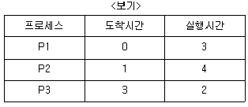
- 5.7
- 6.0
- 7.0
- 7.3
(정답률: 54%)
4. 다음 C프로그램의 실행 결과로 옳은 것은?
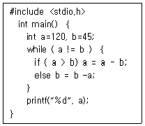
- 5
- 15
- 20
- 25
(정답률: 73%)
5. ＜보기＞와 같이 수행되는 정렬 알고리즘으로 옳은 것은?
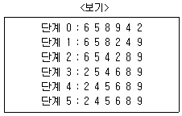
- 쉘 정렬 (shell sort)
- 히프 정렬(heap sort)
- 버블 정렬(bubble sort)
- 선택 정렬(selection sort)
(정답률: 59%)
6. 직원(사번,이름,입사년도,부서)테이블에 대한 SQL 문 중 문법적으로 옳은 것은?
- SELECT COUNT（부서) FROM 직원 GROUP 부서;
- SELECT * FROM 직원 WHERE 입사년도 IS NULL;
- SELECT 이름,입사년도 FROM 직원 WHERE 이름 =‘최%’;
- SELECT 이름,부서 FROM 직원 WHERE 입사년도 =(2014,2015);
(정답률: 57%)
7. ＜보기＞와 같은 특성을 갖는 하드 디스크의 최대 저장 용량은?
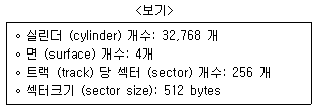
- 4GB
- 16GB
- 64GB
- 1TB
(정답률: 56%)
8. ＜보기＞의 직원 테이블에서 키(key)와 관련된 설명으로 옳지 않은 것은단,사번과 주민등록번호는 각 유일한 값을 갖고,부서번호는 부서 테이블을 참조하는 속성이며, 나이가 같은 동명이인이 존재할 수 있다)
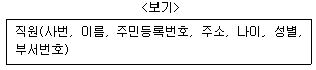
- 부서번호는 외래키이다.
- 사번은 기본키가 될 수 있다.
- (이름.나이)는 후보키가 될 수 있다.
- 주민등록번호는 대체키가 될 수 있다.
(정답률: 78%)
9. 소프트웨어 테스트에 대한 설명으로 옳지 않은 것은?
- 베타(beta)테스트는 고객 사이트에서 사용자에 의해서 수행된다.
- 회귀(regression)테스트는 한 모듈의 수정이 다른 부분에 미치는 영향을 검사한다.
- 화이트 박스(white box)테스트는 모듈의 내부 구현보다는 입력과 출력에 의해 기능을 검사한다.
- 스트레스(stress) 테스트는 비정상적으로 과도한 분량 또는 빈도로 자원을 요청할 때의 영향을 감사한다.
(정답률: 72%)
10. ＜보기＞에 선언된 배열 A의 원소 A[8][7]의 주소를 행 우선(row-major) 순서와 열 우선(column-major) 순서로 각각 바르게 계산한 것은단, 첫 번째 원소 A[0][0]의 주소는 1,000이고, 하나의 원소는 1byte를 차지한다.) (순서대로 행 우선 주소, 열 우선 주소)
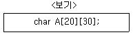
- 1,167, 1,148
- 1,167, 1,218
- 1,247, 1,148
- 1,247, 1,218
(정답률: 44%)
11. 인터넷 주소 체계인 IPv4와 IPv6의 주소 길이와 주소표시 방법을 각각 바르게 나열한 것은? (순서대로 IPv4, IPv6)
- (32비트, 8비트씩 4부분), (128비트, 16비트씩 8부분)
- (32비트, 8비트씩 4부분), (128비트, 8비트씩 16부분)
- (64비트, 16비트씩 4부분), (256비트, 32비트씩 8부분)
- (64비트, 16비트씩 4부분), (256비트, 16비트씩 16부분)
(정답률: 61%)
12. ＜보기＞의 이진 트리에 대해 지정된 방법으로 순회한 결과가 옳지 않은 것은?
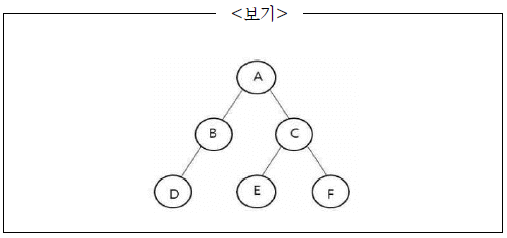
- 중위순회: D → B → A → E → C → F
- 레벨순회: A → B → C → D → E → F
- 전위순회: A → B → D → C → E → F
- 후위순회: D → B → A → E → F → C
(정답률: 46%)
13. 컴퓨터 시스템의 인터럽트(interrupt)에 대한 설명으로 옳지 않은 것은?
- 인터럽트는 입출력 연산, 하드웨어 실패, 프로그램 오류 등에 의해서 발생한다.
- 인터럽트 처리 우선순위 결정 방식에는 폴링(polling) 방식과 데이지 체인(daisy-chain) 방식이 있다.
- 인터럽트가 추가된 명령어 사이클은 인출 사이클, 인터럽트 사이클, 실행 사이클 순서로 수행된다.
- 인터럽트가 발생할 경우, 진행 중인 프로그램의 재개(resume)에 필요한 레지스터 문맥(register context)을 저장한다.
(정답률: 45%)
14. 다음은 3년간 연이율 4%로 매월 적립하는 월 복리 정기적금의 만기지급금을 계산한 결과이다. 셀 C2에 들어갈 수식으로 옳은 것은? (단, 만기지급금의 10원 단위 미만은 절사한다)
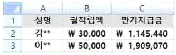
- =ROUNDDOWN(FV(4%, 3*12, -B2), -1)
- =ROUNDDOWN(FV(4%, 3*12, -B2), -2)
- =ROUNDDOWN(FV(4%/12, 3*12, -B2), -1)
- =ROUNDDOWN(FV(4%/12, 3*12, -B2), -2)
(정답률: 51%)
15. 정점의 개수가 n인 연결그래프로부터 생성 가능한 신장트리(spamming tree)의 간선의 개수는?
- n-1
- n
- n(n-1)/2
- n2
(정답률: 49%)
16. ＜보기＞는 관계형 데이터베이스의 정규화 작업을 설명한 것이다. 제1정규형, 제2정규형, 제3정규형, BCNF를 생성하는 정규화 작업을 순서대로 나열한 것은?
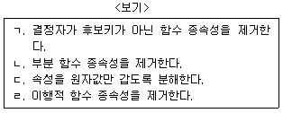
- ㄱ → ㄴ → ㄷ → ㄹ
- ㄱ → ㄷ → ㄹ → ㄴ
- ㄷ → ㄱ → ㄴ → ㄹ
- ㄷ → ㄴ → ㄹ → ㄱ
(정답률: 53%)
17. 다음 Java 프로그램의 실행 결과로 옳은 것은?
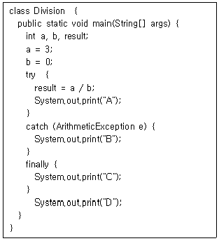
- ACD
- BCD
- ABCD
- BACD
(정답률: 45%)
18. ＜보기＞는 공개키 암호 방식을 전자 서명(digital signature)에 적용하여 A가 B에게 메시지를 전송하는 과정에 대한 설명이다. ㉠, ㉡에 들어갈 내용으로 옳은 것은? (순서대로 ㉠, ㉡)
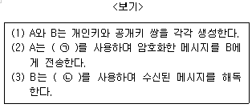
- A의 개인키, A의 공개키
- A의 개인키, B의 공개키
- A의 공개키, B의 개인키
- B의 공개키, B의 개인키
(정답률: 43%)
19. 프로그래밍 언어에 대한 설명으로 옳지 않은 것은?
- Objective-C, Java, C＃은 객체지향 언어이다.
- Python은 정적 타이핑을 지원하는 컴파일러 방식의 언어이다.
- ASP, JSP, PHP는 서버 측에서 실행되는 스크립트 언어이다.
- XML은 전자문서를 표현하는 확장가능한 표준 마크업 언어이다.
(정답률: 52%)
20. ＜보기＞의 설명에 해당하는 기술로 가장 적절한 것은?
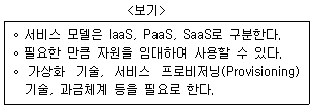
- 빅데이터(bigdata)
- 딥 러닝(deep learning)
- 사물 인터넷(internet of things)
- 클라우드 컴퓨팅(cloud computing)
(정답률: 69%)
01011010는 16진수로 5A와 같다.
따라서 정답은 "5A"이다.